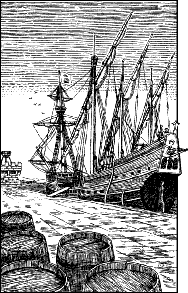

235
Dressed in the plain green tunic, breeches, and cloak of a Kai journeyman, you return to the Vault of the Sun at midnight as ordered. Lone Wolf approves of your appearance and commends you for your determination to succeed. He is confident he has chosen the right Grand Master to fulfil this vital mission. He opens a concealed portal in the wall of the chamber and he motions you to follow him as he steps through into a torchlit tunnel. This secret passage passes under the walls of the monastery and emerges at a clearing in the surrounding Fryelund Forest. Here awaits a party of men and horses—élite troopers from King Ulnar’s Court Cavalry Regiment. Lone Wolf bids you good luck and godspeed as you climb into the saddle of a chestnut mare and, with a proud salute, you bid farewell to your leader before galloping away with the horsemen along a moonlit forest track.
Your bodyguard of King’s troopers have orders to ensure that you reach Holmgard harbour swiftly and safely; they know nothing about your mission. You ride all night and enter the capital shortly after dawn, whereupon you are escorted through the awakening streets to the harbour where The Pride of Sommerlund, an armed caravel, is moored alongside the stone quay. From its mainmast flies a red flag emblazoned with a golden galleon and a five-pointed crown. It is the Holmgard ensign, the flag of this city’s trading fleet. As you rein your mare to a halt, you cast your eyes along the ship’s deck and note that it is equipped with several light swivel cannon mounted upon the gunwales. It is uncommon for traders to be armed, even those that venture regularly into the Kuri Sea which is notorious for its brigands and pirate raiders. Your voyage is destined to traverse these perilous waters and so the unexpected sight of the ship’s guns comes as a welcome surprise.

A bristle-bearded First Mate called Paoll is on dawn watch and he beckons you to come aboard. Your cavalry escort, having delivered you safely to the quay, now bid you a safe voyage and depart from the harbour with your horse in tow. Paoll welcomes you and offers to show you to your cabin. He says that the ship’s master, Captain Raker, is still ashore after having spent last night celebrating at the Good Cheer Inn. He says he was due back at dawn, yet he does not appear to be particularly concerned by his absence. It is not uncommon for Captain Raker to be late back from shore leave, especially when he and his crew are to embark on a long voyage. Paoll tells you not to worry and says that Raker should be back within the hour.
If you wish to wait on board for Captain Raker to return, turn to 311.
If you decide to go and look for him at the Good Cheer Inn, turn to 88.